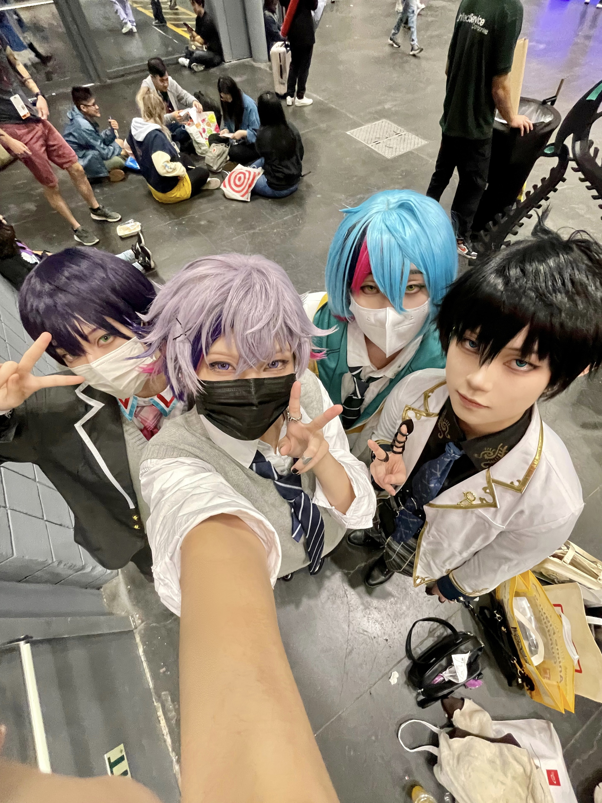

Helen Could you briefly introduce yourself?
Teresa My name is Teresa, I'm 21 years old, my pronouns are she/her, and I'm currently unemployed—I'm a college student.
H Before you were selected as the interviewee, I learned that you have experience building parasocial relationships with fictional characters. Could you briefly describe through which mediums (manga/comics, anime/animation, games, novels, movies, TV dramas, etc.) you primarily establish such relationships with fictional characters?
T It was through fan creations, like fanart. Fan works attracted me first, and then I became interested in the fictional characters, which led me to explore the original works and get to know them better.
H What types of fan creations were they mainly?
T All kinds, but mostly illustrations and written works. Those two types are what drew me in the most.
H Based on these mediums, how did you build parasocial relationships with the fictional characters?
T Well, the character I want to talk about is Wang Yao Wang Yao(China) is the personification of China. He is the oldest nation in the Allies, being depicted as immortal as well as being over four or five thousand years old, and is regarded as the eldest sibling among the East Asian nations. from Hetalia: Axis Powers. Honestly, I feel like my interest in this character comes more from fan creations than from the original work. It might sound funny, but I don’t think I got his charm from the original work.

I feel like I got to know his charm through the works created by people who also love him within the fandom. It’s mainly the way he’s portrayed in fanart and his personality in those works that attracted me.
H Why do you think the original portrayal of this character wasn’t as appealing to you?
T First of all, the subject matter of the work is quite sensitive since it involves historical and political elements. Over time, the characters in the original work feel like they’ve become OOC (out of character) due to the author’s handling. Also, while the original is a manga, it has spawned anime and stage performance, and the character’s personality varies across these different mediums. That’s why I find this character a bit more complex compared to others.
So, I think the charm of this work lies in how fanart fills in the gaps left by the original. The original work leaves a lot of blanks in portraying this character, and fanart helps complete his character image.
So, I think the charm of this work lies in how fanart fills in the gaps left by the original. The original work leaves a lot of blanks in portraying this character, and fanart helps complete his character image.
H Could you describe what kind of parasocial relationship you have with this character?
T It’s hard to describe, but I think I see him as a younger brother, and I’m like his older sister. I want to tease him or dress him up. My feelings for this character aren’t straightforward or typical. I’m drawn to the gender-neutral characteristic of his character, which feel rare in male characters. It’s like he has traits that are usually associated with femininity, and that contrast is something I really like. That’s what I like about fictional characters—they often have traits that are uncommon or not absolute in real life.
H Why do you think you developed this kind of relationship? How did the character resonate with you emotionally or in other ways?
T I think it goes back to fanart. I’m not someone who enjoys reading novels, but most of the text I read is fanfiction. Before I even knew this character, I read some famous fanfics within the fandom and wondered, “What kind of person is he that inspires so many amazing works?” That made me want to learn more about him. The original work itself is very supportive of fan creations, so I feel like the character I came to love was shaped more by fan works than by the original work.
In my mind, there are three versions of Wang Yao’s personality, but they’re all the same person: one from the stage performance, one from fan works, and one from the original manga. They’re all him, but I prefer the fan-created version.
Another aspect of his charm is that he’s a nation—he’s not a human in the conventional sense. He’s a personification of a country, so he doesn’t have the same emotions as humans. I like that about him—his non-human qualities are part of his appeal.
In my mind, there are three versions of Wang Yao’s personality, but they’re all the same person: one from the stage performance, one from fan works, and one from the original manga. They’re all him, but I prefer the fan-created version.
Another aspect of his charm is that he’s a nation—he’s not a human in the conventional sense. He’s a personification of a country, so he doesn’t have the same emotions as humans. I like that about him—his non-human qualities are part of his appeal.
H Do you think this relationship has had any impact on your real-life? Are these impacts positive, negative, or a mix of both?
T I don’t think it’s affected my life negatively, but it has added some fun to it. For example, when I visit museums now, I might notice things I wouldn’t have paid attention to before knowing this character. The work has historical references, and I wasn’t particularly good at history in school or interested in it before. But because of this character, I find myself paying more attention to certain things, like realizing, “Oh, this is something I read about before,” or “This is how it works.” It’s made me more curious about things I might not have cared about otherwise. So, I’d say it’s had a positive influence—it’s broadened my horizons.
H Lastly, have you made any efforts for this relationship? (creating fanart, cosplay, buying merchandise, participating in related events, etc.)
T I’ve tried drawing him, but sometimes I don’t feel like it. For me, the reason I hesitate to draw characters I like is that I feel like I can’t capture their essence. I’ve attempted to draw him many times, but I’m never fully satisfied. Still, I do draw him occasionally because his appearance is relatively easy to capture. But it’s like, you can draw the outside, but not the inside.
Part of why I don’t like the original portrayal is that Wang Yao should be the most complex character among all the nations because he’s the oldest. But the original author makes him seem too childish, like there’s no depth to him. So, when I draw him, I don’t just make him look tired—I try to capture his charm, which lies in his baby face but deeply layered personality. He has a lot of history behind him, 5,000 years of it, and that’s what I want to convey.
Part of why I don’t like the original portrayal is that Wang Yao should be the most complex character among all the nations because he’s the oldest. But the original author makes him seem too childish, like there’s no depth to him. So, when I draw him, I don’t just make him look tired—I try to capture his charm, which lies in his baby face but deeply layered personality. He has a lot of history behind him, 5,000 years of it, and that’s what I want to convey.
Helen Could you please briefly introduce yourself?
Liz Ok, you can call me Liz. I'm currently a senior majoring in illustration and an illustrator. My pronouns are she/her.
H Before you were selected as the interviewee, I learned that you have experience building parasocial relationships with fictional characters. Could you briefly describe through which mediums (manga/comics, anime/animation, games, novels, movies, TV dramas, etc.) you primarily establish such relationships with fictional characters?
L Mainly through short videos or clips related to the character on video platforms. If I become interested in the character, I might then watch their related works, such as anime, manga, or other media.
H Clips made by others, right? Meaning fan-made videos.
L Yes, videos made by fans, like small animations or hand-drawn works.
H Based on the media you mentioned, how do you think you establish such relationships with fictional characters?
L I feel that fan-made character animations are particularly engaging. For example, by watching these short animations, I can quickly get a sense of the character's background story. If it resonates with me, I’ll seek out more content to learn about the character.
Moreover, these fan-made animations are usually short, but even a few seconds can create stunning visuals or stories that captivate me. Additionally, these animations are easily accessible, allowing me to understand the character without much effort.
Moreover, these fan-made animations are usually short, but even a few seconds can create stunning visuals or stories that captivate me. Additionally, these animations are easily accessible, allowing me to understand the character without much effort.
H Alright, if you have established a parasocial relationship with a character, could you describe what kind of relationship it is? Who is the character?
L The character is Fuwa Minato.Fuwa Minato is a virtual YouTuber under NIJISANJI. His streams cover a variety of content, including gaming, chatting, and singing. He is loved by fans for his humorous and playful personality, and occasional "airheaded" moments.
I feel that my relationship with him is somewhat like having a crush on a classmate from another class. To elaborate, it’s like secretly admiring someone in school who is in a different social circle, so you never talk to him, but you keep supporting him hahaha. For example, like a member of the school band whom I support unilaterally, drawn to his personal charm.
I feel that my relationship with him is somewhat like having a crush on a classmate from another class. To elaborate, it’s like secretly admiring someone in school who is in a different social circle, so you never talk to him, but you keep supporting him hahaha. For example, like a member of the school band whom I support unilaterally, drawn to his personal charm.
H Okay, but you mentioned that this character is a virtual streamer, meaning there’s a real person behind the character. Do you see him purely as a fictional character?
L Yes, I know there’s a real person behind the character, but I separate the character from the person. I don’t care about the person behind the character; I only care about the fictional character himself. The character has his own backstory and world setting, so I see him entirely within those settings, completely separate from the person behind him. I consider them as existing in different worlds.
H Got it. Why do you think you established such a relationship? How did this character emotionally or otherwise resonate with you?
L Initially, I just found the character interesting.
He does fun projects, like doing radio gymnastic with audiences virtually, and he often says some silly things, which I find endearing. His natural, somewhat clumsy personality is something I really like.
After watching many clips of him, I naturally wanted to learn more about him, so I started watching his full livestreams on YouTube. Over time, I discovered that he has many skills beyond his goofy persona. I was particularly impressed when I found out he plays the electric guitar, which really elevated my admiration for him. He’s also good at gaming, and since I was really into Splatoon at the time, I often watched his gameplay of playing Splatoon to learn from him, though I didn’t quite get it.
Overall, he’s someone who seems laid-back but is actually quite talented and hardworking, which I find unexpectedly appealing.
He does fun projects, like doing radio gymnastic with audiences virtually, and he often says some silly things, which I find endearing. His natural, somewhat clumsy personality is something I really like.
After watching many clips of him, I naturally wanted to learn more about him, so I started watching his full livestreams on YouTube. Over time, I discovered that he has many skills beyond his goofy persona. I was particularly impressed when I found out he plays the electric guitar, which really elevated my admiration for him. He’s also good at gaming, and since I was really into Splatoon at the time, I often watched his gameplay of playing Splatoon to learn from him, though I didn’t quite get it.
Overall, he’s someone who seems laid-back but is actually quite talented and hardworking, which I find unexpectedly appealing.
H You mentioned that he’s the type of guy you’d have a crush on. Is this based on your own preferences, like someone you’d be drawn to in real life?
L I think so. I feel like he represents an idealized version of myself. I’ve always wanted to learn an instrument, and seeing that in him feels like a projection of my past aspirations.
H Do you think this relationship has affected your real-life? Positively, negatively, or both?
L I think both, but more positively. During a time when I was struggling with some personal issues and several relationships fell apart, I felt hopeless about real-life social interactions. Discovering VTubers and watching my favorite VTuber’s livestreams filled that void and made life feel a bit more fulfilling.
However, it also became an escape from real-life social interactions, which isn’t entirely healthy. Relying on virtual streamers to alleviate loneliness reduced my interactions with real people, leading to a decline in my ability to express myself and communicate effectively.
Moreover, since few of my real-life friends are familiar with the character I like, I couldn’t share my enthusiasm with them, leaving me with no outlet to express my thoughts. This lack of expression has been detrimental.
But I haven’t completely disconnected from reality. When I went back to China, I wanted to meet people who also like VTubers, so I attended many conventions, which made my real-life feel very fulfilling. I enjoy offline events, mainly because I get to see high-quality fanart and participate in activities. It gives me a sense of belonging, knowing that everyone there shares the same interest in these fictional characters, making me feel less alone.
Moreover, since few of my real-life friends are familiar with the character I like, I couldn’t share my enthusiasm with them, leaving me with no outlet to express my thoughts. This lack of expression has been detrimental.
But I haven’t completely disconnected from reality. When I went back to China, I wanted to meet people who also like VTubers, so I attended many conventions, which made my real-life feel very fulfilling. I enjoy offline events, mainly because I get to see high-quality fanart and participate in activities. It gives me a sense of belonging, knowing that everyone there shares the same interest in these fictional characters, making me feel less alone.
H Okay, you’ve mentioned attending related events. Besides that, what other efforts have you made for this relationship? (e.g., making fanart, cosplay, buying merchandise)
L I’ve done a lot.

I’ve done cosplay and bought a lot of merchandise. Regarding cosplay, I often discussed it with a friend who also enjoys it. I once asked her why she didn’t cosplay as her favorite character, and she felt it would be disrespectful to the character, as it might shatter her fantasy of them.
But I don’t feel that way. I see cosplay as a way to express my love for the character. It allows me to showcase my understanding of the character and, in a way, briefly become them, which is a fulfilling experience—like briefly becoming my ideal self.
However, I understand my friend’s perspective. It really depends on the character. For example, I wouldn’t cosplay as a character with a sacred aura, like Kaworu Nagisa from Neon Genesis Evangelion.
Of course, it’s challenging for real people to perfectly replicate fictional characters, who are often seen as flawless, while humans have their imperfections.
But I don’t feel that way. I see cosplay as a way to express my love for the character. It allows me to showcase my understanding of the character and, in a way, briefly become them, which is a fulfilling experience—like briefly becoming my ideal self.
However, I understand my friend’s perspective. It really depends on the character. For example, I wouldn’t cosplay as a character with a sacred aura, like Kaworu Nagisa from Neon Genesis Evangelion.
Of course, it’s challenging for real people to perfectly replicate fictional characters, who are often seen as flawless, while humans have their imperfections.

Liz's cosplay with her friend and other fans
H You’re correct and before this interview, you mentioned that this relationship has started to fade. Why is that?
L I was actually thinking about this today. As I mentioned earlier, I got into VTubers because of emotional setbacks in real life, and at that time, VTubers were quite popular. It was a serendipitous discovery that I quickly fell in love with.
But after about a year, my real-life social circle stabilized, and I no longer needed to rely on VTuber livestreams to escape my reality.
But after about a year, my real-life social circle stabilized, and I no longer needed to rely on VTuber livestreams to escape my reality.
H I see. So the beginning of this relationship was due to bad things in your real life, and its end came as that turmoil settled, allowing you to find a new way of living.
L Yes, I feel more reconnected to reality now.
H If your real life were to become turbulent again, might you return to this escape?
L I think it’s possible, even likely. While I hope my real life remains stable, VTubers currently offer a low-risk way to experience intimacy. If I face emotional setbacks again, there’s a 70% chance I’d return to this escape because it gives a sense of security.
Next
Parasocial Relationships with Fictional Characters in Therapy <Excerpt>
In this section, the topics surrounding fan followings are discussed. There positive aspects of fandoms, such as the opportunity for the creation of real relationships and the sharing of the love of the characters through different venues. There are also negative parts in being a member of a fandom, such as the arguments that occur over different components the media which can turn into cyberbullying, and/or threats to individuals in these groups.
Although this relationship with video game characters is slightly different, there are fan followings to all different types of characters and medias. Fan followings can be also referred to as fandoms. A “fandom” is a group of fans of a piece of media that interact with the media in various ways. This includes, discussing the media on social networking sites, drawing fanart and/or writing fanfiction and sharing these works, and creating theories about the characters and the plotlines of the original work.
Duchesne stated, “fandom is a particular kind of performance that many members boldly explore, playing with identity and finding their own layers of meaning.”43 Members of fandoms find their own meaning to the original work. They play with the identity of the characters, as well as forming their own identities through these characters.
Being in a fandom can have emotional benefits and can aid in the individual member’s identity formation.44 People in fandoms can communicate and build a friendship with other people in the fandom while discussing their favorite medias.45 With this connection, the parasocial relationships can become more intensified because they are now associated with both the media and the friendships that are created from the shared love of the media.46 The more that a member identifies with a group, their view of self is linked to the group as a whole.47
Since there may be a need to maintain and increase their sense of self in a fandom, members are driven to promote their fandom positively.48 This can be toxic in the way that other fandoms are bashed as a result. Also, the promotion of the original work, the preferred ships (pairings of characters that fans want to be in a romantic relationship with each other) and “fanon” (aspects of the work that is based on fan theory to the extent that it is seen as practically canon by some members), can cause tension between members of the same fandom.49 This tension could lead to cyber bullying, threats, and/or fights between members of the same fandom.50
Through cognitive dissonance, members of a fandom can change their attitudes, thoughts and behaviors to restore the regulation between their own opinions on the content and the behaviors they display while on social media websites.51 This is why some fandoms are seen as “toxic.” An example of this is the fandom of the show Steven Universe. The show itself promotes love and acceptance of people from different walks of life, while the fandom is the polar opposite. There are “shipping wars,” which are arguments about which characters should be paired together.52 Also, much of the fanart is viciously criticized for not having the characters portrayed in a certain view.53 54
Fandoms help promote the continuation of parasocial relationships with characters. The fandom of a particular media can assist with the connection to a character through discussions, arguments, theorizing, and art making of the character. Fanfiction, fanart, and cosplay pictures are shared in these fandoms through social media sites, which helps deepen the parasocial relationships for many audience members.
Many people have attachments to fictional characters that can be likened to friendships, a form of an alternate self through vicarious watching or even through a romantic crush. The creation of fanart and fanfiction is an extension of this attachment with people creating a new form of their favorite medias. People can also become their character for a brief period of time through cosplay.
In the first section, fanfiction and fanart are discussed as two different types of ways to use characters in an artform. Fanart is a visual artform with a character represented in the piece created by an enthusiast of the original media that the character resides. Fanfiction is a form of writing that uses existing characters in a new storyline penned by a fan. These characters can be shifted into anything that the artmaker wants during the creation of a piece of fanart or fanfiction as exemplified by a study by Hiromi and Saori (2015) discussed about the fandom of “fujoshi” in Japan and the artwork that they create using existing characters. In the second section, the artform of cosplay is explained and discussed. Cosplay is the performing art of dressing as a character and these costumes are usually handmade by their wearers. A study by Rahman, Liu, and Cheung (2012) is examined about a cosplay subgroup in Hong Kong.
Fanfiction is the creation of a story with existing characters, story universe, and/or alteration of an existing plot. Fanart is an art piece created with characters from a form of media. Both artforms express the creators’ relationship with the existing media and characters. Many of these pieces can take hours, weeks, or even years to complete. Upon completion, these artworks are often shared via social media sites (i.e. Tumblr, Facebook, Instagram) or websites that are designed for sharing such works (e.g. Deviantart, Patreon, or fanfiction.net). Some creators also have tables at various conventions to display and sell their works to other fans. Even though creating fanfiction or fanart is often stigmatized in society by those that don’t participate, it is a labor of love for many.
One of the types of media that is stigmatized in Japan is yaoi or boy love (BL), which centers around love stories between two men. Hiromi and Saori (2015) conducted a survey that focused on a fandom known as “Fujoshi,” which translates to “Rotten girls.” These fans are primarily heterosexual women that read romance graphic novels involving homosexual couples. Some of the fans, in addition to reading the manga produced by professional artists, create works of both characters in other “yaoi” works and characters in other popular series that are typically “boys’” media (i.e. manga in action, adventure or sports genres). Fujoshi also share a bond of being in the fandom which separates them from non-Fujoshi in both positive and negative ways. One of the theories discussed as to why this genre is popular with the Fujoshi is that these women enjoy reading these stories because there are no female characters being forced to act submissive, which is an escape from the oppression of women (and their sexuality) in Japanese society.55
Fanfiction and fanart are a type of love letter to the character that a person has a parasocial relationship with. These works are also shared among other fans in social media sites. Sometimes the comments that are made on this work can be positive and can raise the self- esteem of the creator of the work.56 These comments can also be very negative and damaging to the artist or writer’s sense of self and creative ability.57 58 The creation of any art piece with a character as the muse helps strengthen the parasocial relationship that the artist, writer or cosplayer has with their favorite characters.
Cosplay is putting on a costume of a character. For many this is an important ritual that occurs before attending a convention or a Halloween gathering. Some make these costumes from scratch, which can often take months to complete, while others buy these costumes online. There are varying levels of skill in cosplayers, from beginner to expert or (referred in many online communities as) “God-level.” One of the things that is common for all of these fans is that they are able to embody a character that they have a parasocial relationship with, even if it is for a few hours.
Rahman et al. (2012) conducted a study of the subculture of cosplay in Hong Kong using interviews and observations of cosplayers at a convention. The researchers participated in cosplay while interviewing members of this subculture, as well as photographed the experience. There were fifteen participants in this study and were interviewed both during causal conversations (twelve participants), and structured in-depth interviews (two participants). All of the participants were cosplayers of various skill levels and had varying opinions of the subject. One of the novice cosplayers was nervous putting on the costume and becoming the character. Another participant, who saw herself as a “professional cosplayer,” felt that certain people wearing costumes are not actually cosplayers and that others should put more effort into their cosplay costumes and personas. Rahman et al. stated, “Cosplay enables enthusiasts to imitate the personas of their adored characters and to re-create an imaginative self in reality.”59
Cosplayers usually put their photos of their costume on display via social media sites, on Halloween and at conventions, such as the San Diego Comic Con. During this period, a person can embody their favorite characters for a short amount of time, get pictures taken of them and meet other fans of the original medias. Becoming a different person could be a therapeutic experience for some fans because it can give them strength, confidence and an escape from reality while wearing the costume.
Parasocial relationships are an integral part of some people’s lives. Through the development of the relationship, the strengthening of it during the creation of fanfiction, fanart and cosplay, and the emotions that are evoked through viewing the character’s story audience members connect to these fictional characters. Derrick et al. (2008) stated, “...although people consciously know that parasocial relationships are not real relationships, in many ways they feel psychologically real and meaningful.”60
(11/21/2023)
Hello welcome to my essay :) it's about ORV, this website, emotions, and rhetoric
There are epilogue spoilers, and side story spoilers where marked
Omniscient Reader's Viewpoint by SingShong leads the reader to the ending but doesn't open the last door. The book's epilogue follows the secondary characters as they try through desperate means to revive the protagonist Kim Dokja, whose soul has been scattered in pieces and reincarnated across parallel universes. His friends resort to writing a book about their time together, Omniscient Reader's Viewpoint aka the book you are currently reading, then distribute it across the universes. If a person with a piece of his soul reads the book, it can remember who it is and return. The final few pages follow the group as they run towards the part of Kim Dokja they had left, his lost pieces of soul light up the sky as they stream back to him, and the book ends as they open the door to his room. It isn't definitively revealed whether he has been revived or not. The tone is uplifting and hopeful and all signs point to him being there, but that final cliffhanger has become a sticking point.
The ending is ambiguous, but explicitly depends on what the reader believes will happen. The text tells the reader that because they have read this far, they have a piece of Kim Dokja's soul. Therefore, the reader imagining a happy ending is what enables it to happen.
Is Kim Dokja there when they open that door? Will he survive? Do you want him to survive? Can he survive if you don't want yourself to survive?
The meta nature of ORV doesn't let the reader separate their own feelings from the book. Your emotions craft the ending, specifically your hope. The ending gives the readers responsibility to survive. The reader's responsibility towards the ending, and love towards Kim Dokja, moves from being between readers and the book to between readers and other readers.
The readers are bound into a collective, not iust through the shared experience of reading this book but because we're all fragments of Kim Dokja. In the final line “this story is just for that one reader,” it isn't a single reader, but every reader unified as one. “We are all fragments of each other / I too am a reader / By god, it hurts.” As strongly as a reader wants Kim Dokja to survive, they want their fellow readers to survive.
This website was created and posted on Tumblr by user lee-hakhyun and cross posted to Twitter by user orvbookclub, with a prompt of “write something on the wall,” and tagged for ORV. Anyone can anonymously write anything. There's a lot of jokes and shipping and ASCII art, but a maiority of messages are those of hope and support and love. Looking at this wall as a piece of rhetoric uncovers how the novel has impacted the readers with the message of ‘survive’ and inspired them to pass it on to others using the novel as a template. Emotions expressed between readers on this wall are despair, optimism, compassion, sanguinity, and general marvel at the collective that readers have been bound into.
Three Ways to Survive in a Ruined World was written so that Kim Dokja could survive through suicidal ideation, then ORV was written so he could survive his self-sacrifice, but it was also written so that we the readers can survive. The first and last lines explicitly say, “You who are reading this now will survive.” In the book, the message of desperate hope moves from Han Sooyoung to Kim Dokja through You Joonghyuk. The same message moves from SingShong to the readers through Kim Dokja: “Dokja saved my life the way twsa did for him.” Then it moves amongst the readers, on social media and on this webpage.
Each person writing something has their own rhetorical objective, but we can also look at the website as a whole. Kimcom assumes Kim Dokja’s core identity is that of a reader, and that’s how he can be identified across the worldliness. Looking at this page, I think we can add “depressed” alongside “reader.” As one person put it, “IS EVERYONE AT ORV FANDOW DEPRESSED? THIS LOOKS SM LIKE A ANTIMENTAL ILLNES GROUP I LOVE YOU GUYS.”
Exigence is assumed to be others’ struggles, particularly to feel loved or to survive. The website was created by and for ORV fans, but many of the messages are aimed at people with struggles. This assumption could come from the identification of the collective as fragments of Kim Dokja - we are all Kim Dokja, so we are all readers, so we are all depressed. The final problem in the novel is whether Kim Dokja has the will to return, and whether the readers will allow him to return. As the reader’s emotions towards the book are transferred towards other readers, so is the problem of depression.
The mode of total anonymity is likely freeing for those confessing to how this story helped them through depression or grief, or how they are still struggling. These kinds of posts often have compassionate replies, expressing pride in the person for getting through or wishing them strength to continue. There are also messages to anyone who might see it and need it. Many of these messages of support mirror or quote phrases used in the book, such as “you who are reading this now will survive,” “I shall pray that you will continue to exist somewhere, too,” [10 coins have Benn sponsored for survival], and “I want to live.”
Even the medium of the website and the concept of "writing on the wall" comes from the book. It emulates the Final Wall where all stories are written. Using a wall to communicate also brings to mind the Wall of Impossible Communication, and its connected theme: we can never fully understand a story or another person, and there will always be depths we can't see, but we must try to understand anyway. Messages on this website are written with this in mind, and quotes about the walls are referenced. Our words may not be seen but they must be left here anyway, because one day, someone might read them. There is awareness that not only are the themes and emotions of the novel recirculated, but the rhetoric used to originally convey them.
These messages are constrained by the fact that it’s literally just a wall of text. There are no time stamps, no usernames, no actual reply system, just text. The website was also posted in English, although the original web novel is in Korean. There are messages on the wall in a variety of languages, but they are primarily English. The audience is somewhat constrained to English speaking fans, and the wall can only presumed to reflect their conclusions.
The reader’s feelings abut the ending are circulated throughout the website, but they aren’t contained just here. The authors were aware that some readers think that Kim Dokja doesn’t survive. They wrote a side story/sequel about it. It returns to the moment where Han Sooyung opens the door to Kim Dokja’s room, but we see what happens next. She is greeted by two paths: one where Kim Dokja wakes up, and one where he doesn’t. She realizes this os because there were some readers who didn’t imagine him waking up. The character angrily blames the readers for not doing their job right. However, in the author’s notes, SingShong comes across with compassion for the readers who couldn’t imagine Kim Dokja waking up and says the side story is written for every reader, not just Kim Dokja.
Whether the book or this website effectively sways the reader towards hope, away from the exigence of depression, is difficult to judge. Most reactions upon immediately finishing the book are full of distress. But there are also many comments, including on this wall, that claim the book changed their life.
The book’s themes around suicide, open ending, and binding of readers as fragments were a perfect storm for strong emotions and rhetoric around depression and hop to circulate among the readers. Emotions towards Kim Dokja - a beloved main character - can easily slide to be oriented towards other readers or even yourself. This website, where people could have written anything, is filled with love because of the unique ending to ORV.
There are three ways to survive in a ruined world. I’ve forgotten some of them by now, but I know this: you who are reading these words will survive. And you who are reading these words will tell others to survive.
There are epilogue spoilers, and side story spoilers where marked
Omniscient Reader's Viewpoint by SingShong leads the reader to the ending but doesn't open the last door. The book's epilogue follows the secondary characters as they try through desperate means to revive the protagonist Kim Dokja, whose soul has been scattered in pieces and reincarnated across parallel universes. His friends resort to writing a book about their time together, Omniscient Reader's Viewpoint aka the book you are currently reading, then distribute it across the universes. If a person with a piece of his soul reads the book, it can remember who it is and return. The final few pages follow the group as they run towards the part of Kim Dokja they had left, his lost pieces of soul light up the sky as they stream back to him, and the book ends as they open the door to his room. It isn't definitively revealed whether he has been revived or not. The tone is uplifting and hopeful and all signs point to him being there, but that final cliffhanger has become a sticking point.
The ending is ambiguous, but explicitly depends on what the reader believes will happen. The text tells the reader that because they have read this far, they have a piece of Kim Dokja's soul. Therefore, the reader imagining a happy ending is what enables it to happen.
Is Kim Dokja there when they open that door? Will he survive? Do you want him to survive? Can he survive if you don't want yourself to survive?
The meta nature of ORV doesn't let the reader separate their own feelings from the book. Your emotions craft the ending, specifically your hope. The ending gives the readers responsibility to survive. The reader's responsibility towards the ending, and love towards Kim Dokja, moves from being between readers and the book to between readers and other readers.
The readers are bound into a collective, not iust through the shared experience of reading this book but because we're all fragments of Kim Dokja. In the final line “this story is just for that one reader,” it isn't a single reader, but every reader unified as one. “We are all fragments of each other / I too am a reader / By god, it hurts.” As strongly as a reader wants Kim Dokja to survive, they want their fellow readers to survive.
This website was created and posted on Tumblr by user lee-hakhyun and cross posted to Twitter by user orvbookclub, with a prompt of “write something on the wall,” and tagged for ORV. Anyone can anonymously write anything. There's a lot of jokes and shipping and ASCII art, but a maiority of messages are those of hope and support and love. Looking at this wall as a piece of rhetoric uncovers how the novel has impacted the readers with the message of ‘survive’ and inspired them to pass it on to others using the novel as a template. Emotions expressed between readers on this wall are despair, optimism, compassion, sanguinity, and general marvel at the collective that readers have been bound into.
Three Ways to Survive in a Ruined World was written so that Kim Dokja could survive through suicidal ideation, then ORV was written so he could survive his self-sacrifice, but it was also written so that we the readers can survive. The first and last lines explicitly say, “You who are reading this now will survive.” In the book, the message of desperate hope moves from Han Sooyoung to Kim Dokja through You Joonghyuk. The same message moves from SingShong to the readers through Kim Dokja: “Dokja saved my life the way twsa did for him.” Then it moves amongst the readers, on social media and on this webpage.
Each person writing something has their own rhetorical objective, but we can also look at the website as a whole. Kimcom assumes Kim Dokja’s core identity is that of a reader, and that’s how he can be identified across the worldliness. Looking at this page, I think we can add “depressed” alongside “reader.” As one person put it, “IS EVERYONE AT ORV FANDOW DEPRESSED? THIS LOOKS SM LIKE A ANTIMENTAL ILLNES GROUP I LOVE YOU GUYS.”
Exigence is assumed to be others’ struggles, particularly to feel loved or to survive. The website was created by and for ORV fans, but many of the messages are aimed at people with struggles. This assumption could come from the identification of the collective as fragments of Kim Dokja - we are all Kim Dokja, so we are all readers, so we are all depressed. The final problem in the novel is whether Kim Dokja has the will to return, and whether the readers will allow him to return. As the reader’s emotions towards the book are transferred towards other readers, so is the problem of depression.
The mode of total anonymity is likely freeing for those confessing to how this story helped them through depression or grief, or how they are still struggling. These kinds of posts often have compassionate replies, expressing pride in the person for getting through or wishing them strength to continue. There are also messages to anyone who might see it and need it. Many of these messages of support mirror or quote phrases used in the book, such as “you who are reading this now will survive,” “I shall pray that you will continue to exist somewhere, too,” [10 coins have Benn sponsored for survival], and “I want to live.”
Even the medium of the website and the concept of "writing on the wall" comes from the book. It emulates the Final Wall where all stories are written. Using a wall to communicate also brings to mind the Wall of Impossible Communication, and its connected theme: we can never fully understand a story or another person, and there will always be depths we can't see, but we must try to understand anyway. Messages on this website are written with this in mind, and quotes about the walls are referenced. Our words may not be seen but they must be left here anyway, because one day, someone might read them. There is awareness that not only are the themes and emotions of the novel recirculated, but the rhetoric used to originally convey them.
These messages are constrained by the fact that it’s literally just a wall of text. There are no time stamps, no usernames, no actual reply system, just text. The website was also posted in English, although the original web novel is in Korean. There are messages on the wall in a variety of languages, but they are primarily English. The audience is somewhat constrained to English speaking fans, and the wall can only presumed to reflect their conclusions.
The reader’s feelings abut the ending are circulated throughout the website, but they aren’t contained just here. The authors were aware that some readers think that Kim Dokja doesn’t survive. They wrote a side story/sequel about it. It returns to the moment where Han Sooyung opens the door to Kim Dokja’s room, but we see what happens next. She is greeted by two paths: one where Kim Dokja wakes up, and one where he doesn’t. She realizes this os because there were some readers who didn’t imagine him waking up. The character angrily blames the readers for not doing their job right. However, in the author’s notes, SingShong comes across with compassion for the readers who couldn’t imagine Kim Dokja waking up and says the side story is written for every reader, not just Kim Dokja.
Whether the book or this website effectively sways the reader towards hope, away from the exigence of depression, is difficult to judge. Most reactions upon immediately finishing the book are full of distress. But there are also many comments, including on this wall, that claim the book changed their life.
The book’s themes around suicide, open ending, and binding of readers as fragments were a perfect storm for strong emotions and rhetoric around depression and hop to circulate among the readers. Emotions towards Kim Dokja - a beloved main character - can easily slide to be oriented towards other readers or even yourself. This website, where people could have written anything, is filled with love because of the unique ending to ORV.
There are three ways to survive in a ruined world. I’ve forgotten some of them by now, but I know this: you who are reading these words will survive. And you who are reading these words will tell others to survive.
Helen How did you establish an emotional connection with the characters through the medium of the novel *ORV*? Why do you think you were able to build this kind of relationship with fictional characters in this work?
Lime As I read ORV and followed these characters' stories, it felt as if I was living through the events along with them... This goes for a lot of stories, but ORV in particular is a metafiction work which intends for you to self-insert into the main character and indirectly includes the 'reader' in the work itself. i think that connection is the main why this story speaks to me a lot more than any other.
H What motivated you to create this message wall?
L One of the major points of ORV is that everyone has a wall, and even if that wall is one that makes communication impossible, you should still try to communicate anyway.This is what I was reminded of the minute I found the website, and it's what inspired me to set it up. I wanted to give people a chance to leave a mark on this 'wall', to speak to the characters or leave a message for others to see. Even if the wall between fiction and reality is absolute, it doesn't make those messages worthless. There are still others that will see what was left and get something out of it.
H Do you think the existence of this message wall has deepened the relationship between the fans of this work, the "readers" as well as the characters in the original story?
L I do! It has for me, at least. Seeing how many other people care for this story and these characters has done nothing but deepen my own love for them. Thinking about how much you love something is one thing, but actually writing it down and outwardly showing that is so much more intimate. I like knowing that other people think the same of these characters as i do, and that ORV has affected them just as much as it did with me.
Survive

1 Rahman, O., Liu, W., & Cheung, B. H., "Cosplay": Imaginative Self and Performing Identity, Fashion Theory: The Journal of Dress, Body & Culture 16, no. 3 (2012): 317-341, https://doi.org/10.2752/175174112X13340749707204.
2 R. Tukachinsky, "When Actors Don't Walk the Talk: Parasocial Relationships Moderate the Effect of Actor-Character Incongruence," International Journal of Communication 9 (2015): 3394-3410.
3 T. Hiromi & I. Saori, "Enjoying Manga as Fujoshi: Exploring Its Innovation and Potential for Social Change from a Gender Perspective," International Journal of Behavioral Science 10, no. 1 (2015): 77.
4 T. Hiromi & I. Saori, "Enjoying Manga as Fujoshi: Exploring Its Innovation and Potential for Social Change from a Gender Perspective," International Journal of Behavioral Science 10, no. 1 (2015): 77.
5 R. Tukachinsky, "When Actors Don't Walk the Talk: Parasocial Relationships Moderate the Effect of Actor-Character Incongruence," International Journal of Communication 9 (2015): 3394-3410.
6 R. Tukachinsky, "When Actors Don't Walk the Talk: Parasocial Relationships Moderate the Effect of Actor-Character Incongruence," International Journal of Communication 9 (2015): 3394-3410.
7 C. Linden, personal communication, January 25, 2018.
8 C. Linden, personal communication, January 25, 2018.
9 R. Tukachinsky, "When Actors Don't Walk the Talk: Parasocial Relationships Moderate the Effect of Actor-Character Incongruence," International Journal of Communication 9 (2015): 3394-3410.
10 C. Linden, personal communication, January 25, 2018.
11 C. Linden, personal communication, January 25, 2018.
12 J. Guth, "Why the Steven Universe Fandom is the Worst Ever," The Odyssey Online, 2015, accessed [date], https://www.theodysseyonline.com/why-am-no-longer-steven-universe-fan.
12 J. Guth, "Why the Steven Universe Fandom is the Worst Ever," The Odyssey Online, 2015, accessed [date], https://www.theodysseyonline.com/why-am-no-longer-steven-universe-fan.
13 T. Hiromi & I. Saori, "Enjoying Manga as Fujoshi: Exploring Its Innovation and Potential for Social Change from a Gender Perspective," International Journal of Behavioral Science 10, no. 1 (2015): 77.
14 C. Linden, personal communication, January 25, 2018.
15 C. Linden, personal communication, January 25, 2018.
16 J. Guth, "Why the Steven Universe Fandom is the Worst Ever," The Odyssey Online, 2015, accessed [date], https://www.theodysseyonline.com/why-am-no-longer-steven-universe-fan.
16 J. Guth, "Why the Steven Universe Fandom is the Worst Ever," The Odyssey Online, 2015, accessed [date], https://www.theodysseyonline.com/why-am-no-longer-steven-universe-fan.
17 Rahman, O., Liu, W., & Cheung, B. H., "Cosplay": Imaginative Self and Performing Identity, Fashion Theory: The Journal of Dress, Body & Culture 16, no. 3 (2012): 317-341, https://doi.org/10.2752/175174112X13340749707204.
18 J. L. Derrick, S. Gabriel, & B. Tippin, "Parasocial Relationships and Self-Discrepancies: Faux Relationships Have Benefits for Low Self-Esteem Individuals," Personal Relationships 15, no. 2 (2008): 262.
Wall creator's words